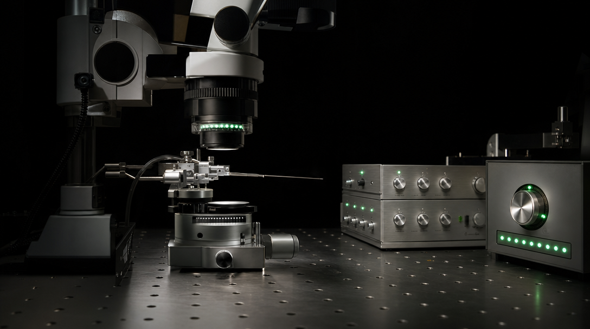
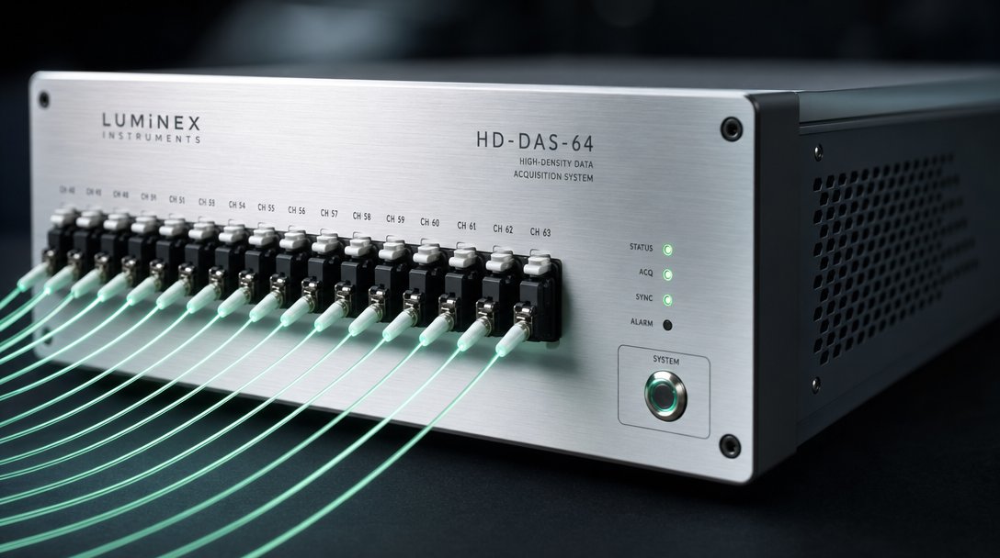
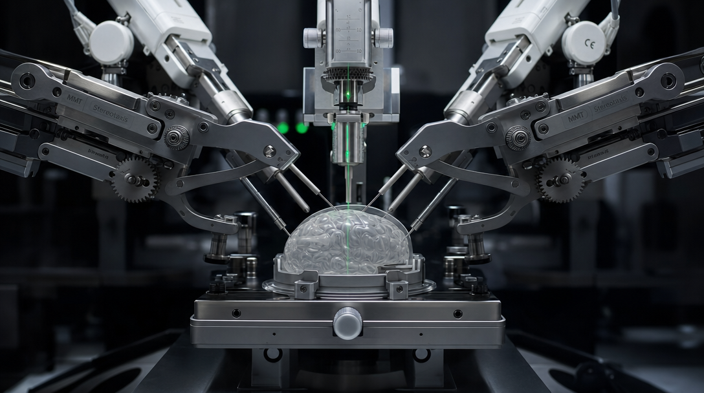
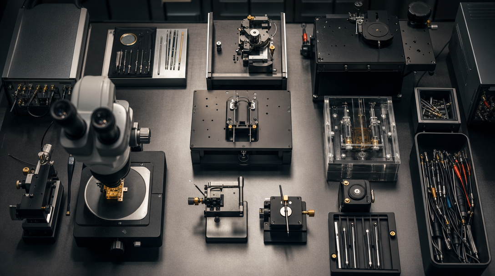
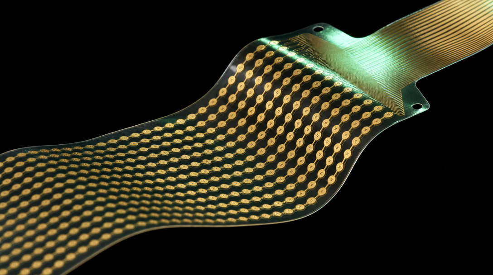

01
高通量植入电极
密歇根硅基电极（32–256 通道）、ECoG 柔性皮层电极、PEG 封装微丝电极阵列，覆盖 Spike、LFP 与 ECoG 全频段记录，支持光遗传联用与微电流刺激。
技术路线 · Technology
植入式 BCI 技术路线 · 生物兼容电极、低噪声高通量采集、智能植入定位与实时信号解析。从材料到算法全自主。

核心技术
幻联科技核心团队覆盖材料科学、微纳加工、芯片设计、神经电生理与算法开发，已掌握可溶性神经介质材料、硅基探针微纳加工、高频信号采集算法等关键技术，为高通量植入式 BCI 研发奠定底座。
技术栈
密歇根硅基电极（32–256 通道）、ECoG 柔性皮层电极、PEG 封装微丝电极阵列，覆盖 Spike、LFP 与 ECoG 全频段记录，支持光遗传联用与微电流刺激。
NeuroBox 高通量主机，配套 Headstage 32/64 通道前端放大器与高速串行连接线，支持 0–30 kHz 在线采样、芯片带宽实时调节与多通道阻抗测量。

MPM 多臂脑图谱定位智能植入系统，可在单次实验中并行植入多支电极、光纤或注射针，是 Neuropixels 官方推荐适配的国产植入平台。

NeuroAnalysis 自研软件支持实时波形浏览、二进制存储、一键 Spike 分选、峰电位与事件相关分析，配套 AI 信号解析与可视化平台。
实验台到病房
我们的技术能力同步覆盖科研实验室与临床康复场景，硬件、软件与服务在两端共同验证。


扩展能力
除核心采集链路外，幻联科技在动物实验仿真、离体细胞分析与神经数据服务方向同样形成完整能力。
270° 多屏显示、运动交互平台与双 GPU 主机，支持沉浸式虚拟环境下的动物行为实验。
HD-MEAs 支持体外细胞功能、发育、连接与形态实时无标记检测，是表型表征、疾病建模与药物研发的关键工具。
原始信号降噪、Spike 分拣、时序分析、关联编码解析、批量数据处理与图谱可视化，覆盖论文级数据加工需求。
定制神经科学/脑机方向动物模型，标准化造模、饲养、行为学检测与样本制备，适配脑机器件植入验证。
学术服务
团队由国家级人才领衔，年均发表多篇高分 SCI 论文，核心负责人担任三甲医院双聘教授。可提供顶级期刊学术支持、国家级科研项目申报辅导、研究特色挖掘、实验室交流、国际高校合作及高端人才引进。面向医院脑机接口团队推出三年科研合作计划，分阶段培育科研基础、产出成果、构建可持续科研能力。
下一步
说明应用场景与通道规格，我们 1-2 个工作日内给出完整方案与报价。